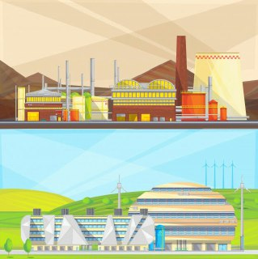
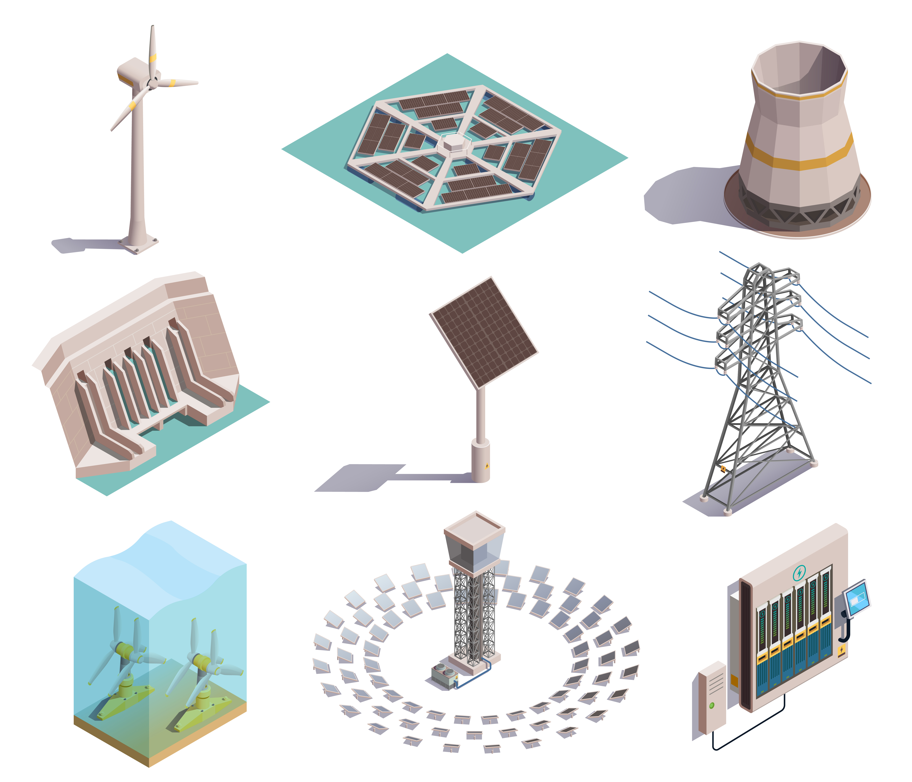

Apresentação do ODS-7
Esse objetivo tem como finalidade garantir uma energia limpa e acessível à todos. Sua proposta vem sendo trabalhada a bastante tempo, principalmente em se tratando da área econômica, mas nem todos podem realizá-la acessivelmente,pois requer muitos gastos na sua produção.
Por isso, foi necessário tratá-la como um objetivo de desenvolvimento sustentável, sendo o aspecto mais importante a ser abordado a ausência da acessibilidade à todos.
A aplicação do ODS-7 no Quênia
Este vídeo conta sobre uma lei criada no Quênia,onde as pessoas poderiam utilizar a energia solar para aquecer a água em suas residências, sendo uma maneira mais eficientes e lucrativa.
Acessibilidade no ODS-7

A acessibilidade das fontes de energias renováveis pode acarretar na saída de milhares de pessoas da faixa de pobreza e miséria. Isso porque, o acesso à energia significa a possibilidade de acesso à internet, à educação,à oportunidades, à materiais hospitaláres mais avançados, enfim a uma infinidade de projetos e escolhas de vida.
Apesar disso, ela não pode trilhar seu caminho sozinha, já que o acesso as tecnologias usadas nessas fontes não é barato! naverdade é muito caro! por isso, torna-se indispensável a cooperatividade nacional.
Cooperatividade Nacional

A cooperatividade nacional consiste na integração entre dois ou mais países, com objetivos em comum, que pode ser estabelicida de diversas maneira, seja elas, políticas, culturais, estratégicas, humanitárias, econômicas, entre outros.
Com relação as fontes de energia renováveis temos que essa tecnologia necessita de dispositivos com conversão energética, também chamados de transdutores. Eles são caracterizados como dispositivos capazes de converter a energia de uma determinada natureza em outra.
Porém, torna-se evidente que a reprodução desses dispositivos exige muito investimento por parte dessas nações, logo é indubitável a adoção de uma união nacional para que todos nós possamos usufruir dela.
Energia Renovável X Não Renovável
As principais vantagens das energias renováveis sob as energias não renováveis são a disponibilidade e a acessibilidade após a implementação do mesmo, já que são exuberantes e inesgotáveis. Além disso, são fontes muito menos poluidoras que as energias tradicionalmente utilizadas.
Fontes de Energias Renováveis
As fontes de energias renováveis são aquelas que possuem um ciclo de tempo antrópico, ou seja, estão sempre disponíveis para a utilização e não se esgotam, sendo a principal delas a energia solar: proveniente da luz do sol, além das fontes eólica, biomassa, hídrica, maremotriz e geotérmica.